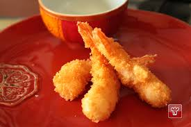

Popular Japanese Dishes

Sushi

Ramen

Tempura
Japan Cuisine
Japanese cuisine is known for its simplicity, precision, and balance of flavors, focusing on seasonal ingredients and presentation.
Rooted in traditional cooking techniques,Japanese food emphasizes umami-rich broths, fresh seafood, and carefully prepared rice dishes.
The cuisine is highly regional, with specialties such as sushi, ramen, and tempura being globally renowned.
Key ingredients include rice, soy sauce, miso, seaweed, and fresh seafood, with dishes often accompanied by pickled vegetables and soups.
Traditional Japanese meals prioritize harmony between taste, texture, and aesthetics, often served in small portions to enhance the dining experience.
Sushi
Ramen
Tempura